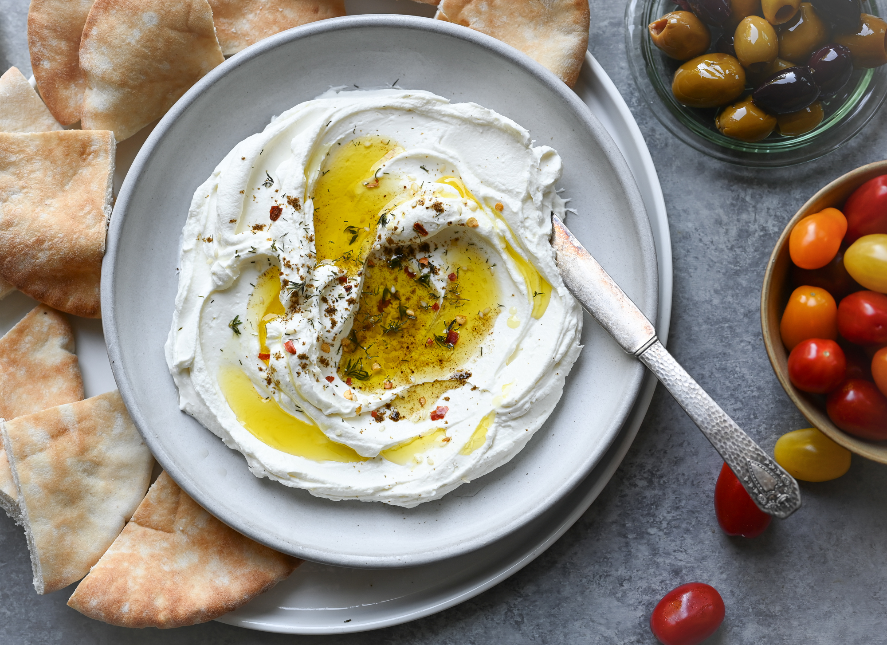

Labneh

Description
This is one of my favorite Lebanese dishes. It consists mainly of yogurt that is pressed through a cheese cloth to remove the whey, resulting in a thick creamy spread that is perfect on just about anything.
Ingredients
- 16 cups plain yogurt
- 1 teaspoon salt
- 1/4 cup olive oil
Steps
- Line a large colander with a cheesecloth. Stir salt into the yogurt, and pour the yogurt into the cheesecloth. Set the colander in the sink or bowl to catch the liquid that drains off. Leave to drain for 24 hours.
- After draining for the 24 hours, transfer the resulting cheese to a bowl. Stir in the olive oil. Store in a covered container in the refrigerator.